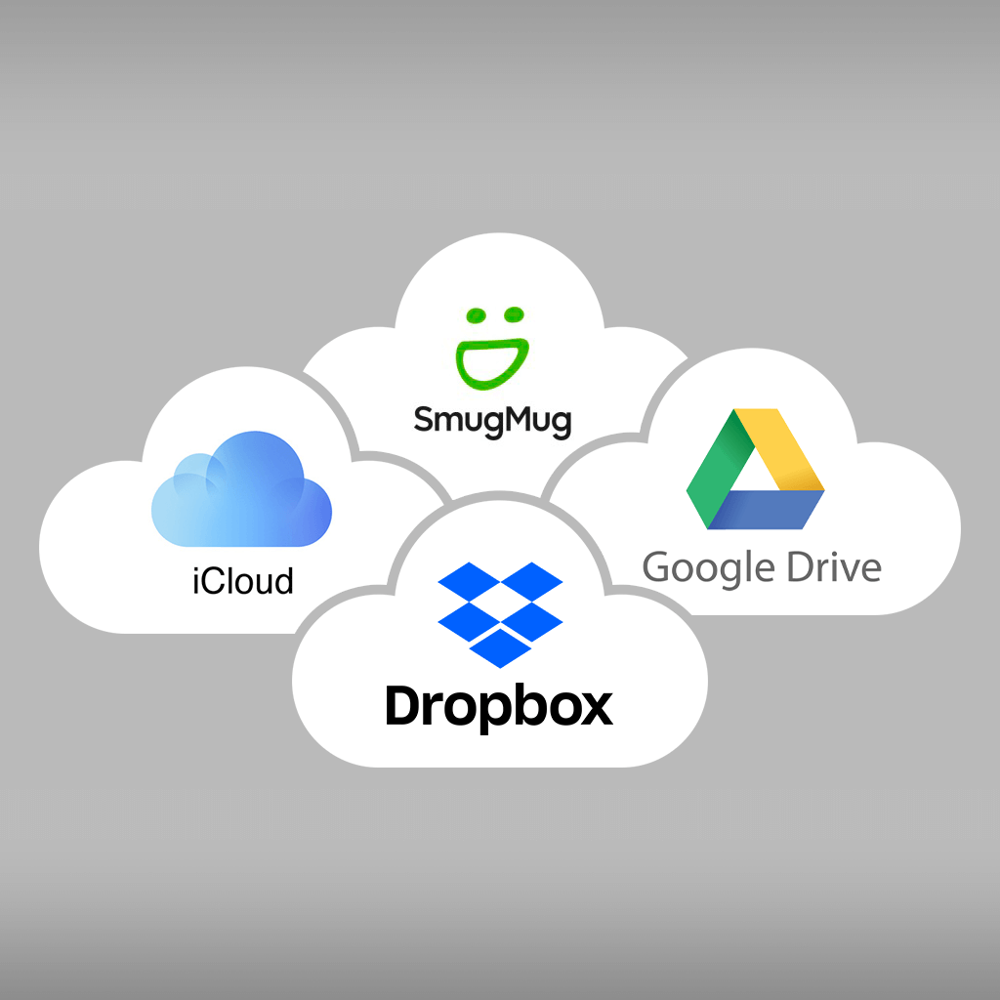

اسم الطالبة: دعاء سليم عمران
الرقم الجامعي: 2502153
أصبح استخدام الإنترنت جزءًا مهمًا من حياتنا اليومية، ومن الخدمات التي ساعدت في ذلك التخزين السحابي. وهو طريقة لحفظ الملفات على الإنترنت بدلًا من الاعتماد على مساحة الجهاز فقط.

التخزين السحابي هو خدمة تسمح للمستخدم بحفظ الصور والملفات والمستندات على الإنترنت، والوصول إليها في أي وقت ومن خلال أجهزة مختلفة.
| الخدمة | الشركة |
|---|---|
| Google Drive | |
| OneDrive | Microsoft |
| Dropbox | Dropbox |
يحتاج التخزين السحابي غالبًا إلى اتصال بالإنترنت، كما أن بعض الخدمات توفر مساحة مجانية محدودة، وقد يحتاج المستخدم إلى شراء مساحة إضافية.